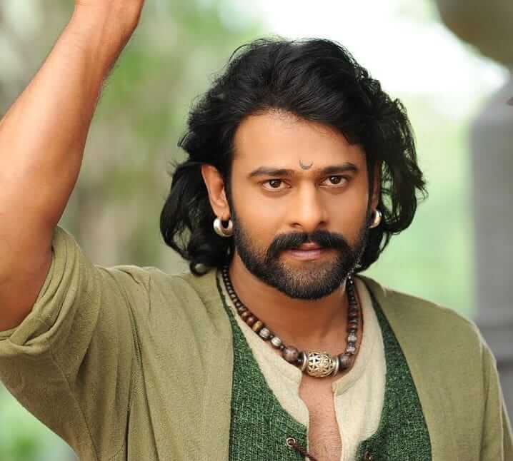
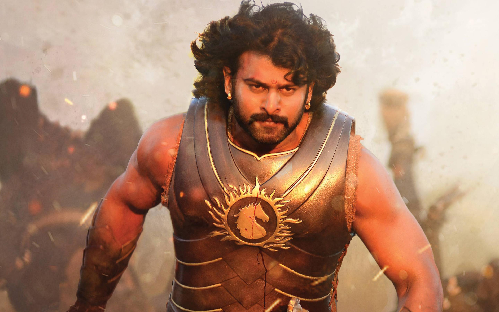
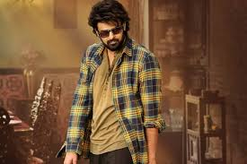

Prabhas, whose full name is Uppalapati Venkata Suryanarayana Prabhas Raju, was born on 23 October 1979 in Chennai, Tamil Nadu, and grew up in Hyderabad. He is one of the most prominent actors in Indian cinema, especially known for his work in Telugu films. He made his acting debut in 2002 with *Eeshwar* and gained recognition with *Varsham* (2004). Over the years, he established himself with successful films like *Chatrapathi*, *Darling*, and *Mirchi*. His career reached new heights with S. S. Rajamouli’s *Baahubali* series (2015–2017), which made him a pan-India superstar and one of the highest-paid actors in the country. Following this, he appeared in big-budget films such as *Saaho* (2019), *Radhe Shyam* (2022), and *Adipurush* (2023). Known for his humble personality and dedication to his craft, Prabhas has won several awards, including the Nandi Award and SIIMA Award, and has consistently featured in *Forbes India’s Celebrity 100* list. Despite his fame, he maintains a private lifestyle and is admired by fans as the “Rebel Star” and “Darling” of Telugu cinema. Prabhas is regarded as the first true pan-India superstar, bridging regional cinema with national and international audiences. His dedication to roles—such as spending years preparing for Baahubali—has set new benchmarks in Indian cinema. With upcoming projects in both Telugu and Hindi, he continues to be a defining figure in modern Indian film. Prabhas was born on 23 October 1979 in a Telugu family to film producer Uppalapati Surya Narayana Raju and Siva Kumari in Madras (now Chennai) as Uppalapati Venkata Suryanarayana Prabhas Raju . The youngest of three children, he has an elder brother, Prabodh, and elder sister, Pragathi. He is the nephew of Telugu film actor Krishnam Raju.His family hails from Mogalthur, near Bhimavaram of West Godavari district, Andhra Pradesh. Prabhas completed his schooling at St. Mary’s High School, Hyderabad, and later graduated with a Bachelor of Business Administration degree from the Kishore Kendra Institute of Arts and Sciences in Hyderabad.[24][25] He was interested in acting from a young age and was encouraged by his family to pursue a career in the film industry.
Prabhas returned to commercial success with the 2023 action-drama film Salaar:
Part 1 – Ceasefire, directed by Prashanth Neel.
This film marked a strategic return to the high-octane, mass-action genre,
it received mix to positive reviews from critics..[7] In 2024, he starred in the
science-fiction film Kalki 2898 AD, a science-fiction epic, directed by Nag Ashwin.
The film's narrative blended Indian mythology, specifically elements of the Mahabharata and the Kalki avatar,
with a dystopian, post-apocalyptic setting.[8] With a budget of ₹600 crore,
it was reported to be the most expensive Indian film ever made. The film received generally positive
reviews from critics and audience alike. The Guardian praised its "maximalism" and "brassy looking" world-building.
Critics lauded the film's ambition, visual effects, and the performances of its ensemble cast.
Kalki grossed over ₹1100 crore at the box office, the second 1000 Crore Club film of Prabhas..
1. Baahubali: The Beginning (2015) – Directed by S. S. Rajamouli
The epic fantasy that introduced Prabhas as Amarendra Baahubali and Shivudu, making him a pan-India star.
2.Baahubali 2: The Conclusion (2017) – Directed by S. S. Rajamouli
The sequel that became one of the highest-grossing Indian films ever, cementing his global fame.
3. Mirchi (2013) – Directed by Koratala Siva
A stylish action drama that earned Prabhas the prestigious Nandi Award for Best
4. Varsham (2004) – Directed by Shoban
His breakthrough romantic drama, which established him as a leading hero in Telugu cinema.
5. Saaho (2019) – Directed by Sujeeth
A high-budget action thriller that marked his Bollywood debut and showcased his versatility.


